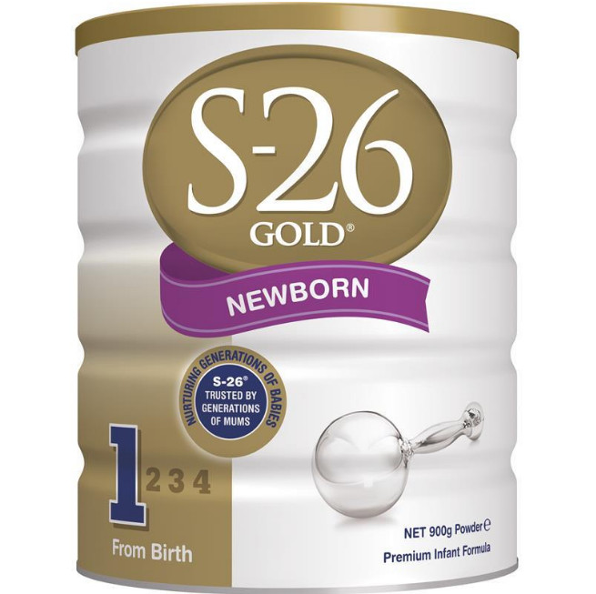
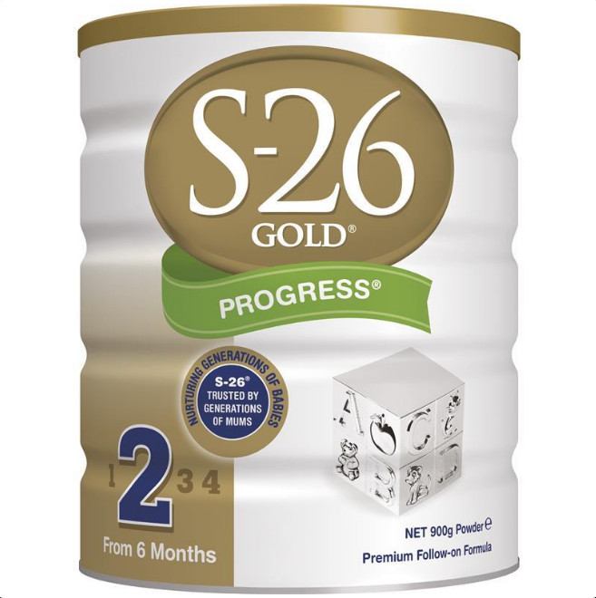

|  | 产品介绍：
澳洲惠氏 S-26奶粉1段（0-6个月），2段（6-12个月）是第一个使用乳清蛋白的，是奶粉行业的领先者！与普通奶粉相比，澳洲惠氏 S-26 金装奶粉的优势：先进的蛋白混合技术：增加Alpha 乳白蛋白含量的同时相对降低了Beta乳球蛋白的剂量， 给宝宝提供更好的蛋白平衡。Omega-3的均衡添加， 帮助宝宝大脑和眼睛得到最佳发育。核苷(Nucleotide) ：帮助建立和完善宝宝的免疫系统。 澳洲惠氏S-26 金装1段奶粉，升级配方，全面营养——惠氏BIO营养优惠系统TM良好的营养有助眼睛、中枢神经及体格发育。叶黄素、DHA、维生素A和牛磺酸等：支持“学能之窗”——眼睛的发育。乳清蛋白、DHA/AA和维生素B12、铁和锌等：有助于中枢神经系统发育——把握学能发展的核心。乳清蛋白、核苷酸、天然胡萝卜素和硒等：强壮健康体格——构筑学能发展的基础。好眼力，好脑袋，好身体，三者环环相扣，宝宝学习能力更强，当然学的又快又乐。 容量：900g 品牌：S-26 澳洲惠氏 产品特点：
不含蔗糖，口感清淡更有利于宝宝的健康成长； 热量和脂肪含量比国产的要低，不会导致宝宝过胖，也不易上火； S-26金装是专门设计的，以确保婴儿获得均衡的，高品质的组合成分，以帮助支持健康成长和发展。 功能概述：
Omega-3：帮助大脑和视力的发育，增强免疫系统。 核苷酸：提高宝宝的抵抗力。改善过敏体质；增加双歧杆菌；提高脂肪代谢。 Iron（铁）：是必需的营养素，帮助宝宝生长发育。 维生素D：建筑宝宝坚强的骨骼发育。 主要成份：
麦芽糊精、无脂奶、植物油（棕榈）、浓缩乳清蛋白、蔗糖、卵磷脂 甘油一酸酯、乙基香草醛、长链多不饱和脂肪酸（LCPs: AA、DHA） 矿物质：氢氧化钾、氯化钾、碳酸氢钠、硫酸铁、碳酸氢钾、锌、硫酸锰铜、碘化钾 维生素：C、B3、B1、B6、A、H、D3、K1、生育酚醋酸酯、浓缩混合生育酚、泛酸钙、天然胡萝卜素、核黃素、叶酸。 适用人群：
适用于0-6个月的宝宝。 使用方法：
1、在准备配方前请洗手；
2、哺乳用具要在沸水中消毒；
3、滚水并使其冷却到哺育温度（大约摄氏37度）；
4、量好冷却的适温开水并装入消毒过的奶瓶中；
5、用罐中的勺子装好一勺奶粉，不要积压，用餐刀刮平多余部分,按照说明加入水中；
6、在50毫升的水中加入一勺奶粉；
7、盖好奶瓶，摇匀，在喂前请滴一滴在手腕上以测试适当的温度。
注意事项：
请放在儿童不能取及的地方，以及阴凉干燥处存放。 在罐底的保质期前使用。打开后请在4周之内用完。 所有的婴儿配方最好在准备好后立刻使用。 请按照说明的方法存储和准备喂食，婴儿将不需要额外的维生素和矿物质补充。 |